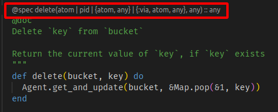

Elixir
安装 elixir
wget https://packages.erlang-solutions.com/erlang-solutions_2.0_all.deb && sudo dpkg -i erlang-solutions_2.0_all.deb
sudo apt-get update
sudo apt-get install esl-erlang
sudo apt-get install elixir
基本类型
Nothing special, [] 用来表示 list, {} 表示 tuple, : 表示 atom/symbol
调用函数
可以去掉括号
iex(18)> div 10, 2
5
div 10, 2 相当于 div(10, 2)
不知道括号有什么意思, 去掉有什么意思。括号永远是 delimiter, 没有这种 delimiter, 还会有其他 delimiter, 比如空格。
文档：
This feature gives a cleaner syntax when writing declarations and control-flow constructs. However, Elixir developers generally prefer to use parentheses.
进制
0b 表示 binary, 0o octal, 0x Hexadecimal
查看文档
h, 顾名思义，表示 help, 和 Linux 的 man 同类效果
匿名函数
Anonymous functions
语法:
iex(1)> add = fn a,b -> a+b end
#Function<43.65746770/2 in :erl_eval.expr/5>
iex(2)> add.(1, 2)
3
iex(3)> add(1, 2)
** (CompileError) iex:3: undefined function add/2 (there is no such import)
iex(3)> is_function(add)
true
点的作用:
Note that a dot (
.) between the variable and parentheses is required to invoke an anonymous function.
用来区分匿名和非匿名函数
For now, just remember that Elixir makes a clear distinction between anonymous functions and named functions.
Closure
Finally, anonymous functions can also access variables that are in scope when the function is defined. This is typically referred to as closures, as they close over their scope.
Lists
iex(4)> length([1,2,3])
3
iex(5)> length [1,2,3]
3
iex(6)> [1, 2, 3] ++ [4, 5, 6]
[1, 2, 3, 4, 5, 6]
iex(7)> [1, 2, 3] -- [1, 2]
[3]
Lists or tuples?
Lists are stored in memory as linked lists
Tuples, on the other hand, are stored contiguously in memory.
函数返回值通常是 tuple, 第一个为状态码, 第二个是内容
quotes
Keep in mind single-quoted and double-quoted representations are not equivalent in Elixir as they are represented by different types:
基本操作
++,--, 集合操作, 并集或者?<>拼接字符串and顾名思义, 而且必然有or- 各种 "trait class":
is_atom ||,&&,!- The difference between
==and===is that the latter is more strict when comparing integers and floats
Pattern Matching
Pattern Match 的使用场景有限:
Although pattern matching allows us to build powerful constructs, its usage is limited
= 通常理解为赋值符号, 但在 Elixir 中叫做 match operator
当 variable 出现在 = 的左边时, 效果等于赋值
iex> [a, b, c] = [1, 2, 3]
[1, 2, 3]
然后玩出各种花样
iex> [head | tail] = [1, 2, 3]
head 占据第一个元素, tail 匹配剩下的元素
The Pin Operator
变量可以多次赋值, 但 elixir 不把这种行为称作多次赋值(re-assign), 而是 "rebound"
某些时候你不希望变量 rebound, 你希望模式匹配(pattern matching), 这是因为 = 有歧义, 为了避免歧义, 你用 ^x = 2 表示这不是 rebound, 而是 pattern matching
_
和 Rust pattern match 的 _ 一个意思
Control-flow
case
x = 1
case 10 do
^x -> "Won't match"
_ -> "Will match"
end
注意到古老的 end, 和 Pascal, Lua 差不多
^x 排除了 rebound 的可能, 剩下纯粹是模式匹配
cond
cond do
2 + 2 == 5 -> "This will not be true"
2 * 2 == 3 -> "Nor this"
true -> "This is always true"
end
其他
和其他语言没什么区别
Binaries, strings, and charlists
？ operator
用 ? 显示 character 的数字(code point)
Null byte
iex> "hełło" <> <<0>>
<<104, 101, 197, 130, 197, 130, 111, 0>>
Bitstrings
用 <<>> 表示，上面的 <<0>>
Elixir 默认每个数字用 8 bits 来存储，但你可以用 ::n modifier 设定(override) 这个单位
<<3::4>> 意思是用 4 个 Bit 存储 3(0b011)
可能会溢出:
iex(10)> <<0::1>>
<<0::size(1)>>
iex(11)> <<1::1>>
<<1::size(1)>>
iex(12)> <<2::1>>
<<0::size(1)>>
iex(13)> <<3::1>>
<<1::size(1)>>
组合形式
iex> <<0::1, 0::1, 1::1, 1::1>> == <<3::4>>
true
Binaries
如何定义二进制（这他妈这个”制“字是有问题的)：
a binary is a bitstring where the number of bits is divisaible by 8
也就是说，首先 binary 是 bitstring, 其次，如果要用 ::n modifier, 那么 n 必须整除于 8
也就说，一个默认的 bitsring 本身就是 binary
"trait class": is_binary, is_bitstring
什么时候使用二进制：
a string is a UTF-8 encoded binary, where the code point for each character is encoded using 1 to 4 bytes
Charlists
A charlists is a list of integers where all the integers are valid code points.
iex> [?h, ?e, ?l, ?l, ?o]
'hello'
可以联想到 C++ 的 std::string 也是一个容器，也有迭代器，可能是一个 vector。
Keyword Lists and Maps
iex> String.split("1 2 3", " ", [trim: true])
["1", "2", "3"]
keyword list 是一个列表, trim: true 是一个 option, 表示这个字符串会被 trimmed
这些 list 没有除了序号之外的索引，而有些 list 有
iex> list = [a: 1, b: 2]
[a: 1, b: 2]
keys, 和其他语言的 keys 一样。这里的 key 必须是 atom, :a 就是 atom，而且是 ordered, 因此可能是红黑树，可以有多个相同的 key, 也就是要么判断 key 的 uniqueness 不是单单一个 key，或者实现可能是 linked-list
Map
A map is created using the
%{}syntax
map = %{:a => 1, 2 => :b}
可以看出 => 是货真价实的 mapping
如何写 one-liner
和 bash 有点像，换行符用逗号，分号，或者 : 代替，不同的是 bash 只用分号
if true, do: "bla", else: "bla bla"
one-liner 没有 end
do: 和 do-block
上一节说得 one-liner 实际上只是 do: 语法，把它称作 do: syntax, 与之对应的是 do-block syntax。
Translation is for insects.
Modules and functions
Modules
Modules 可能是和 OOP 区分开来的一个关键特点, but what the fuck is Modules? C++ 的命名空间，Rust 的 mod，library？我从来不理解这东西。Elixir 也没说什么。个人理解，编译单元 < mod < 命令空间。但是这些概念并不是从属关系，一个 module 可以跨越多个动态库，多个文件，可以这么做，也可以不这么做，命名空间同理，如果没有明确的定义，如何管理它们的关系只是审美问题。
Elixir 用 defmodule 定义 module, 和 Rust 的 mod 如出一辙。
这时候让人出戏的是，elixirc 可以编译一个独立的 module，这也不禁让人想到 library，或者中间文件。
文件管理
.ex 是普遍的 Elixir 文件，要么输出 library 要么输出执行文件，.exs 必然输出执行文件，s 表示 scripting
函数
可能是某种意义上的泛型，只要没有类型，就是泛型，动态语言某种程度上是模板语言
类型约束以两种形式存在，一是显式的类型定义，二是 "trait class"
def zero?(x) when is_integer(x) do
false
end
The trailing question mark in
zero?means that this function returns a boolean; see Naming Conventions.
模式匹配
在 Phoenix 中可以经常看到这种函数：
def show(conn, %{"id" => id}) do
...
iex(1)> defmodule M do
...(1)> def f(%{"id" => id }), do: id
...(1)> end
iex(2)> M.f(2)
** (FunctionClauseError) no function clause matching in M.f/1
The following arguments were given to M.f/1:
# 1
2
iex:2: M.f/1
iex(2)> M.f(%{"id" => 3})
3
iex(3)> M.f(%{"id2" => 3})
** (FunctionClauseError) no function clause matching in M.f/1
The following arguments were given to M.f/1:
# 1
%{"id2" => 3}
iex:2: M.f/1
iex(4)> M.f(%{"id" => 3, "id2" => 4})
3
根据文档 https://hexdocs.pm/elixir/patterns-and-guards.html#maps :
Opposite to lists and tuples, maps perform a subset match. This means a map pattern will match any other map that has at least all of the keys in the pattern.
Function capturing
看别人怎么表达的：
The capture operator
&bridges this gap by allowing named functions to be assigned to variables and passed as arguments in the smae way we assign, invoke and pass anonymous functions.
语法：
- &Mod.fun/arity to capture a remote function, such as &Enum.map/2
- &fun/arity to capture a local or imported function, such as &is_atom/1
- &some_code(&1, ...) containing at least one argument as &1, such as &List.flatten(&1)
Then, what is arity?
Arity is the number of arguments or operands taken by a function, operation or relation in logic, mathematics, and computer science.
:arity- (integer) the number of arguments the function is to be called with.
arity 意味着可以重载
iex> fun = fn x -> x end
iex> info = Function.info(fun)
iex> Keyword.get(info, :arity)
1
所谓 function capturing 是指将你想把函数作为指针传来传去，首先要抓住函数，才能传来传去，就是这个意思
Default arguments
def join(a, b, sep \\ " ") do
a <> sep <> b
end
可见 \\ 表示默认参数
私有函数(private)
用 defp 标注
Recursion
Nothing special, 但由于 Elixir 有独特的 trait class 因此有点像模板递归，最终要写一个 specification.
defmodule Rec do
def fib(n) when n > 2 do
n + fib(n - 1)
end
def fib(n) do
n
end
end
IO.puts(Rec.fib(100))
执行：
elixirc rec.exs
Reduce and map algorithms
如果用 list, 可以利用 [head | tail] 的数据结构，不禁让人想起 lisp 的 car, cdr
我不会重复文档中已有的例子，根据上一节的内容，完全可以知道应该怎么写。
Reduce
In mathematics, reduction refers to the rewriting of an expression into a simpler form.
规约
Enumerables and Streams
- map: 将函数应用到可迭代容器的每一个元素
- reduce: 遍历每一个元素，得出一个最终结果
- filter: 和 map 一样，将函数应用到每一个元素，但结果不必和原来的容器的容量一样
怎样才算可迭代？
any data type that implements the Enumerable protocol
Very fucking well put. 你永远跟不上别人的语言，因为你根本没法创造任何词汇，除非你用仓颉，甚至你用仓颉，创造仓颉的人用的也是别人的词汇。你要独创，你就把人关在玻璃罩子里，像模拟生命起源实验一样，与世隔绝，看能否产生思想，大概率不能，因为人不可能摆脱他受过的教育，除非他从婴儿时期开始就生活在玻璃罩子里面，他有可能创造出思想，有可能不能，大概率是不能，因为历史上，知识是靠无数人的努力才能积累到现在的程度。你问：你要基数对吧，那我把所有人都放在玻璃罩子里面... 你危险了，你说了不该说的话。而且也绝不可能创造出彻底干净的实验环境。这就是永恒的悲剧。
Eager vs Lazy
Each operation is going to generate an intermediate list until we reach the result
The pipe operator
|>
和 bash 的 | 可能有某些相似之处，可能和 Rust 的 and_then 差不多
Streams
和 Enumerable protocol 相似，作为 alternative，不同的是，Enumerable 的函数是 Eager 函数，马上执行，而 Stream 里面的函数是 lazy 函数，不会产生 intermediate lists, 即，pipeline 中，Enumerable 的每一个操作都会产生中间产物，但是对于 Stream 而言，没有中间产物，只有一个 promise，而这个 promise(不是 Elixir 术语) 仅在它被传递给 Enumerable 的时候才开始执行。
比如文件 stream，你不希望马上加载所有的数据到内存里面，你希望在需要它内容的时候才读取它内容，这时候你创建一个 File.stream ，需要的时候传给 Enum.take/2
Processes
spawn/1 return a PID, 也是 Eager 函数，意思是一旦执行到 spawn 马上就创建一个 Process，拿到 PID 的时候这个 Process 可能已经执行完毕。不确定是不是 OS Process。但至少不是线程：
That's because processes are isolated
send and receive
语法：
send(pid, tuple)
receive do
tuple-patterns -> returned-value
end
这里有一个有意思的概念：process mailbox
信息发送给一个 process 的时候，信息放在 process mailbox 里面，可以认为是一个任务队列
可以设置 timeout:
receive do
{:hello, msg} -> msg
after
1_000 -> "nothing after 1s"
end
在电光火石之间，receive 检查了所有的 patterns, 如果没有匹配项，则进入 after, 名副其实的 after，进入 timeout 等待时间。
脚本：
defmodule Proc do
def run() do
parent = self()
spawn(fn -> send(parent, {:hello, self()}) end)
receive do
{:hello, pid} -> "Got hello from #{inspect(pid)}"
after
1_000 -> "nothing after 1s"
end
end
end
IO.puts(Proc.run())
Links
由于 processes 默认是 isolated 的，Links 提供一种破坏 isolated 状态的方式，如果一个 process 出问题退出，那么它可以通过 links 告诉其他 process，比如 supervisor process。
可能是用信号实现，但这个不是我们用 elixir 时需要考虑的问题。
创建和当前 process 有关联的 Process 的方法是 `spawn_link/1
Tasks
对 spawn 的抽象， 提供更好地 error reports。
State
所谓 state 是指你的程序是可配置的，配置项就是 state。配置的方法之一是配置文件，解析配置文件之后，把它放在一个字典里面，这个字典可能外在表现为一个 KV 数据库。
数据库 DBMS, database manage system, 是一个独立的 process:
defmodule KV do
def start_link do
Task.start_link(fn -> loop(%{}) end)
end
defp loop(map) do
receive do
{:get, key, caller} ->
send caller, Map.get(map, key)
loop(map)
{:put, key, value} ->
loop(Map.put(map, key, value))
end
end
end
Registration
Elixir 的常规操作:
iex> Process.register(pid, :kv)
true
iex> send(:kv, {:get, :hello, self()})
{:get, :hello, #PID<0.41.0>}
iex> flush()
:world
:ok
我的疑问是 :kv 是不是整个 Erlang 虚拟机可见
IO and the file system
Nothing special
Alias, require, and import
专用于 "software reuse"
Don't care
Module attributes
defmodule M do
@spec "specification"
end
@ 和 annotation 关系很大，thanks to Java
其他以后可以在看
Struct
可能来到致命的关键点，和 OOP 的区别就体现在这。
Defining Structs
defmodule User do
defstruct name: "John", age: 27
end
明显可以看到 struct 没有名字，Elixir 规定它和 module 同名
Structs take the name of the module they're defined in.
上面例子实际定义了一个名字叫做 User 的 struct
估计有 exception, 凡事都有 exception, 估计有一套语法让你强制定义 struct 的名字, we will see
update syntax |
iex> john = %User{}
%User{age: 27, name: "John"}
iex> john.name
"John"
iex> jane = %{john | name: "Jane"}
%User{age: 27, name: "Jane"}
当 jane 使用 | 的时候，注意到 john 在左边，右边是要覆盖的项，jane 和 john 共用其他部分，在这例子中就是 age
Structs are bare maps underneath
完全可以理解，不是么，你看 %User 长什么样？
元信息：
iex> john.__struct__
User
Feels like python.
注意到 bare maps 不是 barely maps, 或者 merely maps，而 bare map 并没有 "implemented any protocols"
我们不需要知道怎么将 struct 转换成 map，怎么将 bare map 转换成 map, 肯定存在一个适配器，builder，等等，比如 Map.merge/2。你肯定不能在这些细节上浪费时间，因为等你要用的时候，你就有能力找到答案，如果你没有这种能力，那也许你是彻底的废柴。人应该相信自己不是废柴。
Protocols
Protocols are a mechanism to achieve polymorphism in Elixir when you want behavior to vary depending on the data type
和 Rust 的 trait 差不多，甚至关键词也差不多：defimpl
defprotocol Trait do
def type(value)
end
defimpl Trait, for BitString do
def type(_value) do
"string"
end
end
defimpl Trait, for Integer do
def type(_value) do
"integer"
end
end
dispatching on a protocol is available to any data type that has implemented the protocol
说得好
With protocols, however, we are no longer stuck having to continuously modify the same module to support more and more data types.
可以在 module 之外追加 module 定义
但用法不是 3.type() 而是 Trait.type(3), 其实可以看函数签名：
def type(value)
我认为这么做更好，因为摆脱了 self, this, 摆脱了这些语法糖，可以实现函数形式上的统一。
Protocols and structs
The power of Elixir's extensibility comes when protocols and structs are used together.
Extensibility.
Implementing Any
Manually implementing protocols for all types can quickly become repetitive and tedious.
因此 Elixir 提供一种方式:
defimpl YourProtocol, for: Any do
...
end
defmodule OtherUser do
@derive [YourProtocol]
defstruct [:name, :age]
end
@derive 给 OtherUser 实现了 YourProtocol
Fallback to Any
defprotocol Size do
@fallback_to_any true
def size(data)
end
当 Size.size(sth) 找不到定义的 size 时，Elixir 让你使用默认实现，也就是：
defimpl Size, for: Any do
def size(_), do: 0
end
@derive 还是 @fallback_to_any？
you may see many libraries pushing towards the @derive approach
Comprehensions
Comprehensions are syntactic sugar for such constructs: they group those common tasks into the for special form
A comprehension is made of three parts: generators, filters, and collectables.
Generators and filters
就好像给你一枚原子弹，但你没有使用它，没有让它产生破坏，但你知道它有这样的力量，因此可以把它称作 generator.
for n <- 1..4, do: n * n
后面跟着一个 "lambda", 目前为止 elixir 没有出现 lambda, 但为了便于理解我使用了这个词, 实际上叫做 "filter expression"
那么，这是 map? 为什么叫 filter?
Comprehensions discard all elements for which filter expression return
falseornil
Right.
同时，多个 generators 可以同时投入使用
for i <- [:a, :b, :c], j <- [1, 2], do: {i, j}
The :into Option
In general,
:intoaccepts any structure that implements theCollectableprotocol.
很熟悉: Rust std::collections
Sigils
an inscribed or painted symbol considered to have magical power.
出于 extensibility: Elixir 希望 developers 可以利用 Elixir 定制自己的语言
extend the language to their relevant domains
Sigils 用来处理 textual representations. 以 ~ 开头，外加一个 letter, 这个 letter 表示 sigil
Regular expressions
最常见的 sigil 是正则表达式
regex = ~r/foo|bar/
Perl-compatible
后面可以加上 modifier
~r/hello/i
Indeed perl-compatible
Strings, char lists, and word lists sigils
~s就像 C++ 的R(...), 或者 Rust 的r#...#~c声明 char lists~w声明 word lists
iex> ~w(foo bar bat)
["foo", "bar", "bat"]
语法糖
接受 modifier:
c: char listss: stringsa: atoms
Interpolation and escaping in string sigils
in·ter·po·la·tion
/inˌtərpəˈlāSH(ə)n/
noun
- the insertion of something of a different nature into something else.
"the interpolation of songs into the piece"- a remark interjected in a conversation.
"as the evening progressed their interpolations became more ridiculous"
C 语言的 formatter 的 %d 就是 interpolation
Calendar sigils
~D[2019-10-31]
其他 sigils 暂时不管
try, catch, and rescue
raise: throw
Error 本身是一个 module, don't know why:
defmodule MyError do
defexception message: "the yawning abyss"
end
rescue 是个很有意思的词：
Errors can be rescued using the
try/rescueconstruct
实际上很少用：
In practice, Elixir developers rarely use the
try/rescueconstruct
因为很少用，所以不研究
一般这么处理：和 Rust 的 match 差不多
case File.read("hello") do
{:ok, body} -> IO.puts("Success: #{body}")
{:error, reason} -> IO.puts("Error: #{reason}")
end
Throws
don't care
Exits
don't care either
After
again, don't care
Else
Variables scope
Typespecs and behaviours
Types and specs
Elixir is a dynamically typed language, so all types in Elixir are checked at runtime. Nonetheless, Elixir comes with typespecs, which are a notation used for:
- declaring typed function signatures (also called specifications);
- declaring custom types.
参考 https://hexdocs.pm/elixir/typespecs.html#built-in-types
其中有一点非常奇怪：float() 表示 float 类型，而不是调用 float 函数
文档表示： pid()(or simply pid)
Defining custom types
@type year :: integer
和 C 的 typedef int year 一样
@typedoc 用来注释 custom types
@spec 用来写函数签名
@spec current_age(year) :: integer
def current_age(year_of_birth), do:
可以看到，elixir 不像其他语言那样可以一个表达式将函数的本质全部交代清楚，而是需要分为两个步骤：一是 declaration, 二是 definition, 这俩都是我自己引入的术语，和 elixir 文档无关
Static code analysis
he Erlang tool Dialyzer, for example, uses typespecs in order to perform static analysis of code
Behaviours
看起来像在定义插件接口，实际上是定义 abstract class in OOP, 比 Elixir 的 module 更高一层
- define a set of functions that have to be implemented by modules;
- ensure that a module implements all the functions in that set
defmodule Parser do
@doc """
Parses a string
"""
@callback parse(String.t) :: {:ok, term} | {:error, String.t}
end
@doc 表示注释，将来可能被解析成文档，html 那种
@callback 是一个属性 attribute. 后面跟着函数签名，不需要实际定义。任何采用(adopt, 类似于 OOP 的继承）此 behaviour 的 module 都不得不定义一个同样签名的函数。
同时, 可以看到 @callback 和 @spec 有某些相似之处，可以认为后者是前者的子集。
实际上， IDE 会自动给你生成 @spec

Adopting behaviours
defmodule JSONParser do
@behaviour Parser
@impl Parser
def parse(str) do
{:ok, "some json" <> str}
end
end
写法就是这样，可以看出和继承也没什么区别，区别还是有的，比如 OOP 的继承如果只写一层，只继承抽象类，那么和 behaviour 其实差不多，剩下的就是区别。
@impl true 表示如果编译器在所有采用的 behaviours 中都找不到一个同名 callback 的话，就报错。
Dynamic dispatch
Polymorphism 是不是 OOP 专属，答案肯定是否定的，我学 Elixir 是为了彻底摆脱 OOP，而看到 dynamic dispatch 的时候其实感到很失望.
查证后发现多态并不是 OOP 专利/特有
It is commonly employed in, and considered a prime characteristic of, object-oriented programming (OOP) languages and systems. — Dynamic dispatch
Functional programming, on the other hand, allows us to achieve the same polymorphism in a much more elegant way…by simply passing in a function that defines the desired runtime behavior. — Object-Oriented Programming — The Trillion Dollar Disaster
Optional syntax sheet
Elixir 允许某些语法可以忽略 delimiters
太长不看，直接用 mix_format得出最得体的语法形式
直接安装在 Vscode 上： https://marketplace.visualstudio.com/items?itemName=animus-coop.vscode-elixir-mix-formatter
Debugging
同样，用 Vscode 插件:
https://marketplace.visualstudio.com/items?itemName=JakeBecker.elixir-ls
Erlang libraries
Elixir 可以使用 Erlang 的库
结论
感觉这种笔记形式没什么意义，不如做成小抄的样子。而且刷了一遍基本教程什么也记不住。不过刷了一遍，我记下了一些有意思或不常见的语言表达。
Which begs the question: how to write a technical article? 代码是最简单但是最难读的方式，不应该贴代码，而是提炼模型。
Quoting and unquoting
A new journey begins.
The building block of an Elixir program is a tuple with three elements
用 quote 揭露 "the representation of any expresssion"
quote 是一个 macro
用法：
iex> quote <expr>
Many languages would call such representations an Abstract Syntax Tree. Elixir calls them quoted expressions.
Quoted Expression 通常以 tuple 形式存在，这些 tuple 通常有 3 个组件：
- 通常是函数，名字为 atom
- 通常是 metadata, 包含 numbers 或者 context, 以 keyword list 存在(注意不是 map)
- 通常以 list 或者 atom 形式存在，角色通常是函数的参数
对应的 Unquoting 是指将变量展开到 terminal, Elixir 的文档并没有明确定义 unquoting，在这我的理解是：unquoting 是进一步解析语法树，让一个节点从 non-terminal 演变成 terminal
而 Elixir 将这种演变称之为 injection
这让人想起 Rust 的 quote 模块，quote! 生成一个 TokenStream, 里面的变量要用 # 表示：
let builder = quote! {
impl #head {
#vis fn builder() {
}
}
};
在我看来 , Elixri 的 quote 可以类比 Rust 的 quote!，unquote 类比 #, 我怀疑 Rust 的 quote module 借鉴 Elixir，因为 unquote 总比 # 更符合直觉，直觉意味着原创，反直觉意味着掩饰。（我开玩笑的）
Escape
不是所有变量都是 valid quoted expressions: 我不明白为什么不是。Map 就不是，a tuple with four elements 也不是。
iex(7)> a = %{hello: :world}
%{hello: :world}
iex(8)> quote do: a
{:a, [if_undefined: :apply], Elixir}
iex(9)> quote a
** (CompileError) iex:9: invalid arguments for "quote"
iex(9)> quote do: %{:hello => :world}
{:%{}, [], [hello: :world]}
这进一步说明 quoted 的参数应该是一个表达式，a 不是表达式, 但返回 a 则是一个表达式，返回一个字典也是一个表达式
而用 Macro.escape(a) 则返回 quote do: %{:hello => :world} 的结果
Macros
可以想想宏的处理器就是一个编译器，因为编译就是翻译的意思。
defmodule Marlowe do
defmacro define_module(mod, func) do
quote do
defmodule unquote(mod) do
def unquote(func)() do
IO.puts("Hello this is #{inspect(unquote(Mod))}'s #{inspect(unquote(func))}")
end
end
end
end
end
defmodule Test do
require Marlowe
Marlowe.define_module Mod, :func
Marlowe.define_module :Mod, :func
def go do
Mod.func()
:Mod.func()
end
end
Test.go()
花了一小时终于编译过了，结论是 module 的名字可以是 Mod, 也可以是 :Mod, 但函数必须是 atom: :func, 但我完全不知道 Mod 是什么类型
经检查，发现大写开头的都是 atom:
iex(14)> i Mod2
Term
Mod2
Data type
Atom
Raw representation
:"Elixir.Mod2"
Reference modules
Atom
Implemented protocols
IEx.Info, Inspect, List.Chars, String.Chars